The 14th Annual Unigraphics Users Group Meeting is held at the Sheraton Hotel in Long Beach, CA. The keynote address was by Lou Delmonico, President & CEO of PDA Engineering.July, 1990:
Version 7.0 of Unigraphics is released on DEC VaxStations running under the Ultrix operating system, DEC's answer to UNIX.October, 1990:
The Unigraphics Users Group Fall Workshop was held at the Park Plaza Hotel in Boston, MA. This was first fall meeting that was sponsored by the Unigraphics Users Group. For the previous 7 years the fall meeting had been sponsored by Digital Equipment Corp. Note that while DEC continued to participate heavily in the fall meeting since they continued to be held in the northeast for several more years, they no longer played a role in the planning or sponsorship of the activities except in the role of both a large user of Unigraphics software and of course as a strategic partner with Unigraphics as one of the the primary suppliers of workstations and file servers.February, 1991:
The 15th Annual Unigraphics Users Group Meeting was held at the Sheraton Hotel in Long Beach, CA. The keynote address was given by Peter Marks, a leading analyst in the CAD/CAM industry.March, 1991:
Version 8.0 of Unigraphics is released. This was a major enhancement to Unigraphics and included for the first time support for feature-based, parametric solid modeling with the introduction of UG/Concept a standalone version of Unigraphics that included a sketcher, an expression system and for the first time offered the concept of form-features, such as holes, pockets and pads, rather then depending on creating primitives and performing boolean operations. Other feature of Unigraphics Version 8.0 included:July, 1991:
- UG/Concept module
- Many new creation techniques for NURB surfaces
- Non-uniform scaling of NURB surfaces
- Drafting enhancements, including full ANSI-1982 compliance
- Geometry associatively in Point-to-Point CAM module
- GFEM+ embedded finite-element solver
- Internationalization of menus
Version 8.0 of Unigraphics is released on the new HP RISC architecture workstations.August, 1991:
Version 8.1 of Unigraphics is released.November, 1991:
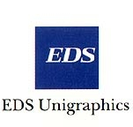March, 1992:
EDS (Electronic Data Systems) acquires the commercial computer services business from McDonnell Douglas. Included with this was the Unigraphics organization, which was the primary purpose of the acquisition in the first place. Also included in the acquisition was the GDS organization which also developed and marketed a CAD system, but which was used primarily for AEC (Architectural Engineering & Construction) as well as GIS (Geographic Information Services, i.e., mapping) applications. Except for these two business units, the remainder of the former McDonnell Douglas computer services business was basically absorbed into other EDS units or were phased out. Note that several years later EDS sold the GDS organization to a private company. The Unigraphics operation was reorganized as an EDS business unit and John Mazzola was appointed as President of the new EDS Unigraphics division.
The 16th Annual Unigraphics Users Group Meeting was held at the Sheraton Hotel in Long Beach, CA. The keynote address was given by Dennis Drislane, vice president of Operations, Mfg. and Distribution Services Div. of EDS. Drislane played a key role in the negotiations that lead to the acquisition of the Unigraphics organization by EDS from McDonnell Douglas and was currently involved in the transition process.June, 1992:
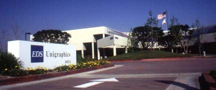August, 1992:
The EDS Unigraphics West Coast operation moves into their new headquarters at 10824 Hope St. in Cypress, CA. This new location included office space for a majority of the companies development personnel as well as the GTAC organization and the Southern California sales office staff. Excess space was leased to other EDS groups, but over time as Unigraphics grew, they eventually occupied the entire building.
Version 9.0 of Unigraphics II is released. This was the last version of Unigraphics that supported UGFM (included with V9.0 and V9.1 was a UGFM to Native conversion program to preserve UGFM header info). It was also the last version that was officially labeled UGII (although we didn't really know that when it was released).September, 1992:
The Unigraphics Fall Workshop was held at the Marriott Orlando World Center in Orlando, FL. There were over 300 people in attendance and it was the first of the "East Coast" meetings held in Florida, which proved to be a very popular venue.November, 1992:
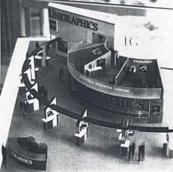December, 1992:
EDS Unigraphics provides a sneak preview of Unigraphics V10.0 at the 1992 Autofact Show in Detroit, MI. This was the first public demonstration of Unigraphics V10.0 anywhere. Extra effort was made as this was the first major trade show that Unigraphics exhibited at since the acquisition by EDS. As shown in the scale model on the right, this was a very elaborate booth with several private demo rooms and a reception area with private meeting areas on a separate upper level. The booth occupied over 5,000 square feet (not counting the second level) and included a theater that seated over 100 people at a time where presentations and demos were given on a regular schedule throughout the duration of the 3 day show. A total of 26 workstations were installed in the booth and virtually all products offered by EDS Unigraphics were being shown somewhere at either one of the many public demo stands or in one of the 4 private demo rooms.
Version 9.1 of Unigraphics II is released. Due to the long duration of the roll out of V10.0, Version 9.1 was supported for several years with many patches being released over time to keep the product as current as possible.February, 1993:
The 17th Annual Unigraphics Users Group Meeting was held at the Sheraton Hotel in Long Beach, CA. Of course the main topic at this meeting was the introduction of Unigraphics V10.0. There were many demos and presentations covering all of the major aspects of the new product. Special attention was given to introducing the new user interface (which no longer supported the PFK), the completely new assembly modeling architecture and the updated Drafting module. However, the most time was spent introducing the concept that the primary method of geometric modeling was now going to be feature-based, parameter driven, solid modeling. As would be expected, a lot of the Q&A session was dedicated to issues involving the transition from V9 to V10.March, 1993:
Field testing of Unigraphics V10.0 started on HP Unix only.September, 1993:
The Fall Workshop '93 was held in Cambridge, MA. This meeting provided more opportunities to review the functionality of V10.0. Also introduced at this meeting was the new ECI (Early Customer Involvement) process which allowed a select number of customers to review current V10.0 functionality and proposed future functionality. Since there were so many changes in the area of the User Interface much of the effort focused on that area.October, 1993:
Unigraphics V10.1 is released. Again this was treated more as a sort of advanced "beta" version with deliveries only to customers who requested it.February, 1994:
The 18th Annual Unigraphics Users Group Meeting was held at the Sheraton Hotel in Long Beach, CA. Again the primary topic of the meeting was Unigraphics V10. By this time there were several customers who had already started to adopt V10 and therefore were able to report their progress. While these customers readily admitted that they were not necessarily using V10 in full production, the consensus was that V10 possessed real potential and that it was a step in the right direction.March, 1994:
The next release of Unigraphics, V10.2, is shipped to those customers who had already received V10.1 or who had made a specific request for V10.2.June, 1994:
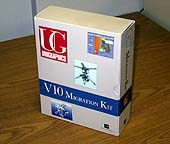September, 1994:
Unigraphics V10.3 is released. This was considered the first fully usable release of V10 and therefore was shipped to all customers as a normal release. Up until now, V10 had only been shipped to customers who had specifically requested it. However, many customers still continued to use V9.1 and only implemented V10 in pilot programs or on only very limited programs. Included with the shipment of V10.3 was a complete "Migration Kit" which included reference materials, self-paced tutorials, training schedules, and the first set of "Head Start Guides", etc. This material was all packaged in a self-contained kit that was provided to all customers receiving V10.3. This was also the first phase of introducing major CAM enhancements based on the V10 architecture. Up until now the primary focus of the V10 release had been transitioning the Modeling and Drafting aspects of Unigraphics to the new V10 paridym as well as the basic Gateway infrastructure.
The Fall Workshop '94 was held in Orlando. FL. This meeting marked the coming of age of V10 as the latest version, V10.3, had already been shipped and many customers were starting to put it into full production. While there were still a lot of discussion concerning the user interface and the pro and con of feature-based verse traditional modeling, the mood was that all customers should start at least a pilot program and in many cases begin the planning process for putting V10.3 into full production.February, 1995:
Unigraphics V10.4 is released. Some of the significant enhancements in this release are Interpart Expressions, the introduction of User Tools (an early User Interface customization capability), support of splines inside the sketcher, Automatic Cliff Edge Blends, etc. Also with this release was the second phase of the start of the CAM transition to the V10 architecture.March, 1995:
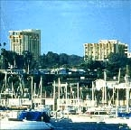May, 1995:
The 19th Annual Unigraphics Users Group Meeting was held at the Marriott Hotel and Tennis Club in Newport Beach, CA. One of the highlights of the meeting was a review of Unigraphics V10.4 (released just prior to the meeting) which was a significant enhancement and maintenance release since usage was up to the point where good quality feedback was finally starting to have an impact on the process of tuning the upcoming point releases of V10. Also at this meeting the importance and popularity of the Vendor Trade Fair was obvious as it was becoming one of the best attended events of the week.
Unigraphics V10.5 is released. This is primarily a maintenance release in response to the large amount of high quality feedback that the development organization was finally starting to get from the growing family of early adopters and new customers who chose to install V10 as their initial implementation of Unigraphics. One of the much requested enhancements included in V10.5 was support for a true helix/spiral curve. In that past there were many user developed GRIP and User Function programs developed that created helical shaped splines, but now Unigraphics was supporting a true helical curve.September, 1995:
The Fall Workshop '95 is held at the Crystal Gateway Marriott in Arlington, VA. This is the first time that a national users meeting was held in this part of the country and it proved to be a very popular venue. One of the special events at this meeting was a very early sneak peek at the Windows NT implementation of Unigraphics. This was a sort of prototype built using V10.5 and was only intended to show what a future production version of Windows based Unigraphics was going to look like.October, 1995:
Unigraphics V10.6 is released. This was primarily a maintenance release and was the last of the "V10" releases. There were a few minor yet very useful enhancements included with this release such as Partial Shading, Un-Blank Selected as well as the option to predefine the color and font of modeling objects such as Sheet Bodies, Solid Bodies, Splines, Datums, etc.November, 1995:
EDS Unigraphics officially announces their intentions to release, during early 1996, a fully compatible version of Unigraphics running on Microsoft Windows NT.January, 1996:
Unigraphics V11.0 is released. This was a major release in several areas including the first efforts to add Industrial Design types of modeling functionality to Unigraphics as well as the first release of functionality intended to help manage extremely large scale assemblies. The Modeling enhancements included items like Bridge Surface, Curvature Analysis for Curve and Surfaces, Face Blends, Variable Offset Surface, etc. In the area of Assembly Modeling the new capabilities included Component Filters, Faceted Representations, Clearance Analysis between multiple Components, etc. Also this release included a fully integrated Spreadsheet linked to Feature-Based Modeling.March, 1996:
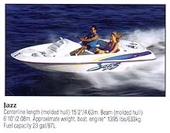May, 1996:
The 20th Annual Unigraphics Users Group Meeting was held at the Marriott Hotel and Tennis Club in Newport Beach, CA. This meeting was of special significance due to the fact that it was also the 20th Anniversary of the very first Unigraphics National Users Group Meeting where people from only 9 companies met in December, 1976 in Southern California. Several special events and activities were scheduled that acknowledged this milestone as well as providing an opportunity to recognize many long time attendees during the first days general session. However, one of the biggest events of the week was something never done quite on this scale before. As part of the 20th Anniversary celebration, the Unigraphics organization, in conjunction with the Users Group, gave away a brand new Jazz Ski Boat from Bayliner Marine Corp., a user of Unigraphics (in fact the Jazz was one of the first projects to be completely designed with Unigraphics at Bayliner). The prize, which included a trailer, was won by Jerry Cartwright from Delphi Chassis Systems in Dayton, OH.
Unigraphics V11.1 is released. While there were many Gateway, Modeling and Drafting enhancements included in this release the primary purpose of this release was to provide a major update of the CAM capabilities of the Unigraphics. Also this was the first version of Unigraphics that delivered a full production version that supported the Windows NT operating system.September, 1996:
The Fall Workshop '96 is held in Arlington, VA for the second year running. In addition to the traditional events and activities this meeting also introduced the first PART (Product Advisory Round Table) sessions where users were invited to participate in mediumer groups to discuss and review various projects and proposals being considered for future releases of Unigraphics. There were session help in such areas as Modeling, Drafting, CAM, CAE. etc.January, 1997:
Unigraphics V12.0 is released. This release introduced the new UG Scenario line of CAE products as well as enhanced visualization of large assemblies.March, 1997:
The 21st Annual Unigraphics Users Group Meeting is held in Anaheim, CA.July, 1997:
Unigraphics V13.0 is released. This was a very significant release with the new redesigned Sketcher and the first release that provided full support of WAVE, the new interpart modeling capabilities of Unigraphics.September, 1997:
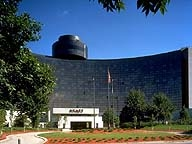October, 1997:
The Fall Workshop '97 is held at the Hyatt Regency Hotel in Dearborn, MI. This was the first national meeting held in the Detroit area and as would be expected there was a very large number of attendees from the automotive industry with several executives from GM giving presentations covering the progress of the implementation of Unigraphics throughout the worldwide GM organization. Since this was also the first national meeting held in the Mid-West, an area that has always been a strong hold of Unigraphics customers, there was a very good turnout from the non-automotive sectors as well.
EDS and the Intergraph Corp. announce their intention to form a joint venture combining the resources of the Unigraphics organization and the MCAD portion of the Intergraph business. This new company would be jointly owned and would be operated as an independent entity with the long term idea that this joint venture could eventually be spun off as a publicly traded company.January, 1998:
EDS announces that the previously announced joint venture with the Intergraph Corp. has been converted into an outright purchase of the Intergraph MCAD business unit which includes the all of the personnel, intellectual property and software associated with EMS, Intergraph's traditional high-end CAD/CAM system, as well as the newly released mid-range product Solid Edge. EDS also announced that it intended to combine the assets gained in this purchase and the EDS Unigraphics Division into a new subsidiary that would be spun off as an independent company later in the year. The plan was to launch an IPO offering the shares of the new company on the Nasdaq exchange (this was later changed to the NYSE).February, 1998:
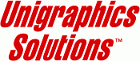March, 1998:
EDS announces that the new Unigraphics organization was going to operate under the name Unigraphics Solutions, Inc. and that John Mazzola was going to be the first CEO of the new company. EDS also announced that the IPO was targeted for June and that EDS was going to retain a majority ownership of the new company though the issuance of special Class "B" shares which would be held by the company with the Class "A" shares sold to the public and the employees as common shares.
The 22nd Annual Unigraphics Users Group Meeting was held in Newport Beach, CA. Of course the buzz of this meeting was the changes taking places at EDS and Unigraphics. There was also presentations concerning the plans associated with the former Intergraph product, particularly Solid Edge.May, 1998:
EDS releases the Prospectus covering the upcoming Unigraphics Solutions IPO and announces that it will be traded on the NYSE under the symbol UGS and that the plan is to have the first public offering of shares in June.June, 1998:
September, 1998:
On Thursday, June 18th, UGS shares traded on the NYSE for the first time. The shares opened at $14.00, which was the original offering price and over 3 million shares traded that first day. When the market closed the share price stood at, you guessed it, $14.00. Oh well, nobody got rich that day, but at least Unigraphics Solutions Inc. was finally launched as a brand new public company. It was sure a long journey from those two rooms above the hairdressing salon in Torrance, CA to Wall Street, and it only took 35 years.
![UGS_on_NYSE[1].jpg](./images/svydtrzg.jpg "UGS_on_NYSE[1].jpg")
The Fall Workshop '98 is held at the Hyatt Regency in Dearborn, MI, the second year that a national meeting was held in the Mid-West. This was the first national meeting where the Unigraphics organization was attending as an independent public company. Again, major emphasis was given to the automotive industry and the involvement by Unigraphics Solutions in that segment with many of the speakers from GM and other major industry players.November, 1998:
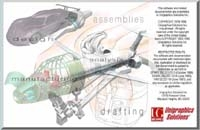March, 1999:
Unigraphics Solutions releases V15.0 of Unigraphics. This release included many enhancements to the WAVE capabilities as well as additional tools to help manage interpart relationships. Also included in this release was a new implementation of the UDF (User Defined Feature) functionality.Another interesting aspect of V15.0 was that this release introduced a limited number of color Icons to control several standard functions, such as File Open, File Save, etc. While this still could not be considered a full fledged implementation of a Windows-based UI, it certainly acted as a precursor of things to come.
The 23nd Annual Unigraphics Users Group Meeting was held in Newport Beach, CA. One of the primary themes of this meeting was move by Unigraphics Solutions to a full Windows-based version of Unigraphics. V16.0, the first true Windows-based version of Unigraphics was show cases with demos of early versions of the software.July, 1999:
Unigraphics Solutions releases the first version of UG/Mold Wizard. The history of this product was not just one based on normal technical development with Unigraphics, but also the work of many people within the User Group. One of the most active yet unofficial groups was an ad hoc group of Mold Makers and plastic part designers who had been meeting, in conjunction with national user group meetings, with members of the Unigraphics development team and other interested users for several years. As a result of their effort, a new and accelerated effort was started to introduce capabilities in Unigraphics aimed specifically at the needs and requirements of the Mold Design and Manufacturing industry. This effort included several groups within Unigraphics as well as partners and groups in Asia. The result of this was the introduction of the Mold Wizard product, which also was a precursor to the effort that eventually lead to the this whole new push for Knowledge Based capabilities imbedded inside of Unigraphics.August, 1999:
Unigraphics Solutions acquires Applicon. Inc. in an outright purchase of assets and responsibility for the currently installed based of Applicon software products. Applicon was one of the pioneers in the CAD/CAM industry and also included the former MDSI company that had developed and marketed the NC software product Compact II, the only real alternative to APT before the advent of graphical based CAM systems. Note that there was no real plan to continue support on any of the Applicon products however, the was an effort made, with good success, to transition existing customers to Unigraphics or Solid Edge. The acquisition of Applicon also allowed Unigraphics Solutions to gain a group of highly experienced programmers and software designers located very near one of their critical markets since Applicon had its headquarters in Ann Arbor, MI approximately 40 miles West of Detroit.September, 1999:
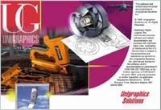October, 1999:
Unigraphics Solutions releases V16.0 of Unigraphics. This version of Unigraphics introduced a completely redesigned User Interface based on the Windows NT standard. In addition to the user interface other aspects of the system was also changed including the option to use the Excel spreadsheet instead of Xess (for NT only) as well as the ability to copy & paste images of the display window into other Windows applications like Word or Power Point and a new architecture for the navigators like the ANT (Assembly Navigator) and MNT (Model Navigator).V16.0 also launched Unigraphics Solutions efforts in the area of Knowledge Based Engineering with the introduction of the new capabilities referred to as Predictive Engineering. There was also major enhancements in the are of CAM as well with many refurbished and completely redesigned modules including a new Navigator based interface for managing and updating existing toolpath and operations.
The Fall Workshop '99 is held at the Hyatt Regency in Dearborn, MI. This was possibly the largest Unigraphics Users group ever held with over 1000 attendees from 12 countries and over 200 different companies and organizations. There were special presentations by executives from Microsoft, Saturn and General Motors.December, 1999:
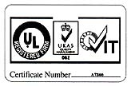Unigraphics Solutions becomes the first supplier of CAD/CAE/CAM/PDM products to achieve worldwide ISO 9001 registration. This was a multi-year effort with the process starting in 1996 when the Unigraphics operations in Europe first initiated a program to gain certification. At that time it was thought that this would only be critical for our European business but it soon became obvious that the ISO certification would have worldwide implications so in late 1997 a more concerned effort was started which would eventually involve the entire organization.